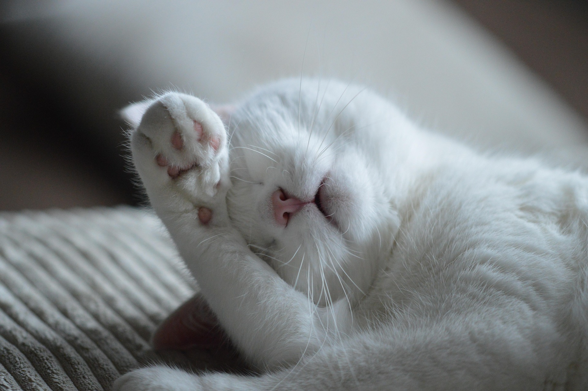
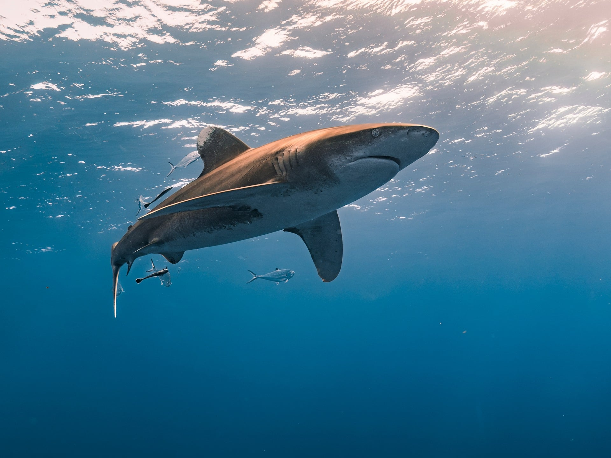

Péče o daná plemena
Zajišťujeme ty nejlepší životní podmínky s důrazem na specifické nároky každého jedince a Vám poradíme jak na to.

Objevte kompletní informace o zdravotním monitorování, očkovacím schématu a postupech, díky kterým odchováváme vyrovnané a zdravé mazlíčky.
Detail parametrů
Objevte podrobné informace o podmínkách chovu, stravovacích protokolech a sledovaných genetických liniích našich žraloků.
Detail parametrůKoťata vyrůstají v obýváku s námi, jsou zvyklá na každodenní kontakt, běžný ruch domácnosti, hluky i přítomnost dalších zvířat. Díky tomu odcházejí do nových domovů vyrovnaná a nebojácná.
Rodiče mají genetické testy (HCM, PKD) a testy na infekční choroby s negativním výsledkem. Koťata odcházejí plně očkovaná, odčervená, označená mikročipem a s vystaveným EU pasem.
Učíme koťata na prémiové granulky, kvalitní konzervy s vysokým podílem masa a čerstvou vodu. Do začátku dostane každý malý svěřenec balíček s oblíbeným krmivem a hračkami.
Chov žraloků v lidské péči je extrémně náročný technický i finanční maraton. Jde o vrcholové predátory, kteří vyžadují specializované zázemí a obrovské prostory. Absolutně nevhodné pro začátečníky.
Vhodné druhy (např. máčka) vyžadují tisíce litrů vody (minimální nádrž od 10 000–15 000 l) s neustálým prouděním, kruhovým tvarem bez rohů a profesionální filtrací.
Žraloci jsou velmi náchylní ke stresu. Vyžadují denní rozbory kvality vody (amoniak, pH, salinita, kyslík), eliminaci vibrací a specializovanou veterinární péči.
Technika musí běžet nepřetržitě – výpadek proudu bez záložního generátoru je fatální. Krmení probíhá 2–3× týdně mraženými plody obohacenými o jód pomocí kleští.
Českomoravská kynologická unie pro psy, Svaz chovatelů koček, nebo mezinárodní standardy pro chov exotičtějších zvířat)..
Českomoravská kynologická unieSpecializované chovatelské kluby pro konkrétní plemena nebo druhy, které sdílejí ověřené zkušenosti.
Český svaz chovatelůKontakty na odborníky, genetické laboratoře a specialisty na výživu či výcvik.
MVDr. Miroslav Šperlich